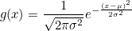

Content from Python Basics Recap
Last updated on 2025-04-15 | Edit this page
Estimated time: 0 minutes
Overview
Questions
- Python Refresher
Objectives
- Understanding key concepts in Python
This course follows on from the python introduction course. To ensure that we are starting from similar positions, there follows a short multiple choice quiz on key python concepts that we will be building on through this course.
Variables and Lists
1. Assigning a value to a variable
We wish to store the string Cat as a value in the
variable animal, which of these lines of code will do this
for us?
animal = 'Cat'animal = CatCat = animalanimal(Cat)
Answer 1 is correct
2. Assigning values to a list
We wish to create a list of values, which of these lines of code is valid to do this?
varlist = [34, 57, '2d']varlist = (12, 'vr', 95)varlist = 'xcf', 12, 97
Answer 1 is correct
3a. Indexing characters in a string
Lists and strings both contain multiple indexed values (in the case
of strings these are specifically individual characters rather than
other values). If we have a variable animal which contains
the string penguin, which of these options will print the
first character (p) for us?
print(animal[0])print(animal[1])print(animal['p'])
Answer 1 is correct
3b. Indexing characters in a string (slicing)
We can also select whole sections of lists and strings, not just
single elements. Using the same variable animal, containing
the string penguin, as above, which of these options will
print the last 2 characters for us? (Note that there is more an one
correct answer)
print(animal[5:])print(animal[6:])print(animal[6:7])print(animal[5:7])print(animal[-2:])print(animal[:-2])
Answers 1, 4, and 5 are correct
Loops
4. Constructing a for loop
Please write a simple for loop which will print out each
of the characters in the animal variable one at a time.
Software Modules
5. Loading new functions
We want to use the functions in the numpy library in our
code. How do we open this library in our code?
import numpyload numpyopen numpy
Answer 1 is correct
If statements and conditionals
6. Conditionals
Which of these conditional tests returns a True
result?
4 > 3'a' != 'b'6 >= 6.0'3' == 33 > 'c'
Answers 1, 2, and 3 return True results. 4 returns
False. 5 raises an Error.
B. Both 4 <= 5 and 4 < 5
would return a True result, but the if
statement is exited as soon as the True result is
returned.
Key Points
- variables
- lists
- indexing
- loops
- conditionals
Content from Dictionaries
Last updated on 2025-04-15 | Edit this page
Estimated time: 0 minutes
Overview
Questions
- How can I work with relational datasets?
- How can I access remote data directly in my scripts?
Objectives
- Learn about JSON format
- How to create dictionaries
- Loading JSON data and working with it
- Using web API’s for accessing remote data
In previous lessons we have learnt about lists and numpy multi-dimensional arrays, which are designed for working with structured, tabular, datasets. But much of the data that we use in our day to day lives, such as that in data catalogs or the communications between modern digital services, does not fit nicely into these tabular datasets. Instead unstructured data formats, which use labels or ‘keys’ to identify each data object are needed. One of the most common formats for such data is the JavaScript Object Notation (JSON) file format. This format was originally developed to fulfil the need for a self-contained, flexible format for real-time server-to-browser communication, and is now used as the basis for many unstructured data formats.
One example of such usage in research is the storage of metadata for data, programs, workflows, or any other such object in a Research Object Crate (RO-Crate). These metadata records take the form:
JSON
{
"@context": "https://w3id.org/ro/crate/1.1/context",
"@graph": [
{
"@id": "ro-crate-metadata.json",
"@type": "CreativeWork",
"about": {
"@id": "./"
},
"conformsTo": {
"@id": "https://w3id.org/ro/crate/1.1"
}
},
{
"@id": "./",
"@type": "Dataset",
"mainEntity": {
"@id": "tracking_workflow.ga"
},
"hasPart": [
{
"@id": "tracking_workflow.ga"
},
{
"@id": "object_tracking_pipeline.png"
}
],
"author": [
],
"provider": [
{
"@id": "#project-1"
}
],
"license": "Apache-2.0",
"sdPublisher": {
"@id": "#person-1"
},
"sdDatePublished": "2021-01-01 00:00:00 +0000"
},
{
"@id": "#galaxy",
"@type": "ComputerLanguage",
"name": "Galaxy",
"identifier": {
"@id": "https://galaxyproject.org/"
},
"url": {
"@id": "https://galaxyproject.org/"
}
},
{
"@id": "#project-1",
"@type": "Organization",
"name": "Science Workflows",
},
{
"@id": "#person-1",
"@type": "Person",
"name": "Alice Smith",
}
]
}The layout of this object is organised using
key:value pairs, where the key is
a unique string, and the value can be any data type,
including other data structures. This simple layout allows quite complex
data objects to be constructed.
Dictionary
In python this structure is implemented using the ‘dictionary’ object. Below we will go through the principles of creating and working with these objects. Then we will introduce a library for working with JSON files.
Creation
Lists are created by using square brackets [ ].
Dictionaries are created by using curly brackets { },
e.g.:
The simplest way to create a dictionary with some value is:
Following the previous example, we can create a python dictionary using the name of a person as the key and their age as the value:
OUTPUT
{'alice': 35, 'bob': 18}Alternatively, a dictionary object can be created using the
dict function, in a similar manner to using the
list function. When using the dict function we
need to indicate which key is associated with which
value. This can be done in a number of ways, firstly with
tuples:
or with direct association:
or using the special zip function, which can be used to
create a set of tuples from the given iterable lists:
Accessing elements
To access an element of the dictionary we must use the key:
OUTPUT
The age of alice is: 35We can also use a variable to index the dictionary:
PYTHON
key = 'alice'
print('The name of the person is used as key:', key)
print('The value associated to that key is:', d[key])OUTPUT
The name of the person is used as key: alice
The value associated to that key is: 35Adding an element
Adding an element to a dictionary is done by creating a new key and attaching a value to it.
OUTPUT
Original dictionary: {'alice': 35, 'bob': 18}
New dictionary: {'alice': 35, 'bob': 18, 'jane': 24}To add one or more new elements we can also use the
update method:
OUTPUT
Updated dictionary: {'alice': 35, 'bob': 18, 'jane': 24, 'tom': 54, 'david': 87}Dictionary Concatenate Warning
Unlike lists it is not possible to use the + operator to
concatenate dictionaries:
OUTPUT
---------------------------------------------------------------------------
TypeError Traceback (most recent call last)
<ipython-input-39-a6305e6df312> in <module>
----> 1 {'alice': 35} + {'bob': 18}
TypeError: unsupported operand type(s) for +: 'dict' and 'dict'Key Uniqueness Warning
Keys have to be unique; you cannot have two keys with the same name. If you try to add an item using a key already present in the dictionary you will overwrite the previous value.
OUTPUT
Original dictionary: {'alice': 35, 'bob': 18, 'jane': 24}
New dictionary: {'alice': 12, 'bob': 18, 'jane': 24}Equality between dictionaries
To be equal, all the elements which compose the first dictionary must be present in the second, and only those elements.
The position (ordering) is not important.
PYTHON
d1 = {'alice': 12, 'bob': 18, 'jane': 24, 'tom': 54, 'david': 87}
d2 = {'tom': 54, 'david': 87}
d3 = {'bob': 18, 'alice': 35, 'jane': 24}
d4 = {'alice': 35, 'bob': 18, 'jane': 24}
print('Dictionary 1 and dictionary 2 are equal:', d1 == d2)
print('Dictionary 1 and dictionary 3 are equal:', d1 == d3)
print('Dictionary 3 and dictionary 4 are equal:', d3 == d4)OUTPUT
Dictionary 1 and dictionary 2 are equal: False
Dictionary 1 and dictionary 3 are equal: False
Dictionary 3 and dictionary 4 are equal: TrueSplitting out keys and values
Dictionaries have some special methods. Two of the most useful are
keys and values. These return the keys and the
values of the dictionary respectively.
OUTPUT
dict_keys(['alice', 'bob', 'jane', 'tom', 'david'])OUTPUT
dict_values([12, 18, 24, 54, 87])Note that the dict_keys and dict_values objects are
iterable but are not lists. This means that they can be used somewhere
like a for loop but you can not index them directly.
OUTPUT
Traceback (most recent call last):
File "<stdin>", line 1, in <module>
TypeError: 'dict_keys' object is not subscriptableIf you want to index keys or values directly, you can convert them to
lists with the list function.
OUTPUT
12Presence (or not) of an element inside a dictionary
It is possible to test if a key is present in the dictionary (or not)
using the keyword in, just as we did at the start of this
lesson for values within a list:
OUTPUT
TrueOUTPUT
FalseNote, however, that we can’t directly test for the presence of values:
OUTPUT
FalseInstead we would have to use the values method to search
these:
OUTPUT
TrueJSON files
Because JSON files are such a widely used format, python has a built
in package for working with JSON, called json: This package
provides the method json.load() to read JSON data from a
file and and convert it to a python dictionary:
The closely related method json.loads() (s for “string”)
reads a string containing JSON and turns it into a Python
dictionary:
OUTPUT
[1, 2, 3]HTTP requests
Although lot of information is available on the internet for general
use, without automated tools for accessing this data it is difficult to
make full use of it. Python has a number of libraries for making HTTP
requests, to help with this automation, of which the
requests library is the most commonly used. This library
provides a streamlined application process interface (API) for carrying
out these tasks, and has built in JSON support, for easy digesting of
the retrieved data.
The basic interaction for making a HTTP request is:
PYTHON
import requests
source_url='https://api.datacite.org/dois/10.48546/workflowhub.workflow.56.1'
requests.get(source_url)OUTPUT
<Response [200]>The HTTP request returns a response code - a value of 200 indicates
the request was successful. There are a wide range of possible
response codes. Those starting as 2XX generally indicate success,
whereas those starting with 4XX indicate a failure of some sort
(including the most common: 404 Not Found).
The HTTP request we made returned more than just the response code,
there will also be the attached content that we requested. In this case
our request was made to an API which returns citation information
associated with the DOI 10.48546/workflowhub.workflow.56.1.
Rather than being presented as a complex webpage, this information is
returned as a machine-readable string, similar to the JSON file we read
earlier, so we can read this in a similar manner:
Once the data is in a dictionary we can start exploring it - first step is to check the keys available:
OUTPUT
dict_keys(['data'])The upper level of the dictionary is simply data - so we can move to the second level:
OUTPUT
dict_keys(['id', 'type', 'attributes', 'relationships'])The id contains the DOI that we used to find this entry,
while the attributes contains the metadata for the object
referred to by the DOI. By digging further into the dictionary we can
extract information about the object.
Find the title
What is the path to find the title of the object?
Find the title (part 2)
Assuming that all JSON objects returned by this API follow the same layout as this record, write a simple function that will return the title of any DOI it is given.
Test that your function works using the DOI:
10.5281/zenodo.4416028
PYTHON
def doi_title( doi_string ):
source_url = f'https://api.datacite.org/dois/{doi_string}'
response = requests.get(source_url)
record = response.json()
return(record['data']['attributes']['titles'][0]['title'])Testing the function:
OUTPUT
'Britain Breathing 2016-2019 Air Quality and Meteorological Dataset'Speed Tests…
Sequences are a great tool but they have one big limitation. The
execution time to find one specific value inside is linear, as can be
shown by fruitless searches for the string x within
increasingly long lists of integers.
We use the built-in %timeit function, to test the speed
of these searches:
OUTPUT
2.02 ms ± 529 µs per loop (mean ± std. dev. of 7 runs, 100 loops each)OUTPUT
17.4 ms ± 1.35 ms per loop (mean ± std. dev. of 7 runs, 100 loops each)Note that the increase in search time is (very roughly) linear.
This is a real problem because the membership test is a very useful and common procedure. So we would like to have something which is not dependent on the number of elements.
Testing access time for large dictionaries
Create two dictionaries, one with 100,000 key:value pairs, the other
with 1,000,000 key:value pairs, using the lists created at the start of
this lesson. Then use these to test the access times for dictionaries
using the %timeit function. How do the access times compare
with those for the lists, are they quicker or slower, and do the access
times scale linearly with the size of the dictionary?
The dictionaries can be created using the zip
method:
The access times for the dictionaries are 100-1,000 times faster than for lists, and the search time does not increase with dictionary size.
OUTPUT
34.2 ns ± 2.31 ns per loop (mean ± std. dev. of 7 runs, 100 loops each)OUTPUT
48.4 ns ± 5.39 ns per loop (mean ± std. dev. of 7 runs, 100 loops each)Note: it is likely that your first report back from the test will look like this:
OUTPUT
The slowest run took 308.65 times longer than the fastest. This could mean that an intermediate result is being cached.
2.52 µs ± 5.91 µs per loop (mean ± std. dev. of 7 runs, 100 loops each)This is because the secret behind the speed of searching a dictionary is the caching of the keys after the first access to them. Running the tests a second time will give above test results.
This caching behaviour is very useful for datasets for are accessed regularly.
Key Points
- JSON is simple
- Dictionaries are defined using
key:valuepairs - Dictionaries can be nested, and mixed with lists
- Web API’s can be accessed using the
requestslibrary
Content from Numpy and Matplotlib Essential
Last updated on 2025-04-15 | Edit this page
Estimated time: 0 minutes
Overview
Questions
- How do I select data within tables for processing?
- How can I load different data formats?
Objectives
- Learn about NumPy matrix objects
- Learn about masking datasets
- Learn about specialised data formats, and how to use them
NumPy extends the Python language by providing new types (array, matrix, masked_array…), functions and methods to realise efficient numerical calculation using Python. NumPy is the numerical library for Python. It is too big to be covered in one day, so today we will learn a few of the basic objects and functions.
NumPy is a foundation block for many other python libraries used in science and data science, e.g.:
- scipy Fundamental library for scientific computing (interation, optimisation…)
- pandas data structure and data analysis tools
- matplotlib Python 2D plotting
And more specialised libraries such as:
- astropy for astronomy
- h5py to interact with HDF5 format datafiles
- scikit-learn for Machine Learning
- TensorFlow for Deep Learning
We are going to learn some of the basic commands not seen in the first course. We will introduce some of these libraries but keep in mind that we are just covering the basics so you can understand how to start using this library. If you find that your interest is piqued and/or they are applicable to your problem, you can use the documentation to learn more.
The array is the central object of NumPy. It is a multi-dimensional object which contains numerical data. The main difference between NumPy arrays and Python lists is the set of operations that can be performed on them. In this lesson we are going to learn a little more about how to use this fundamental library to do any numerical analysis in Python.
NumPy arrays are good for arrays of numerical data where each dimension is of a consistent size. Where you want to work with heterogeneous data and performance is not a problem, working with Python lists and dictionaries is easier than working with uneven datasets in NumPy. Similarly, while NumPy arrays do technically support having different data types in different columns, it is awkward to do and breaks a lot of the useful NumPy methods. It is best to use libraries for the specific purpose for which they are designed, so any sort of tabular data is better handled with something like Pandas.
To start, we are going to import the two libraries numpy
and matplotlib that will be used in this episode.
Here we import the libraries using a common shorthand for them,
np for numpy, and plt for
matplotlib.pyplot. You will encounter this in many python
scripts using these libraries, and we will continue to use these
shorthands below.
If we wanted to create a list of odd numbers in base Python
we would use range and list:
OUTPUT
odds is type <class 'list'>, and contains [1, 3, 5, 7, 9]To create the same list as a NumPy array we can use the
np.arange function:
PYTHON
odds_np = np.arange(1, 10, 2)
print(f'odds_np is type {type(odds_np)}, and contains {odds_np}')OUTPUT
odds_np is type <class 'numpy.ndarray'>, and contains [1 3 5 7 9]Note that we did not need to convert the output of
np.arange, as we did for the output of range,
because np.arange returns a NumPy array directly, rather
than returning a range object.
NumPy Array Addition
What is the difference between addition of NumPy arrays and lists? What is the result of these two additions?
-
[1, 3, 5, 7, 9, 1, 3, 5, 7, 9]for both -
[1, 3, 5, 7, 9, 1, 3, 5, 7, 9]for odds, and[2, 6, 10, 14, 18]for odds_np -
[2, 6, 10, 14, 18]for odds, and[1, 3, 5, 7, 9, 1, 3, 5, 7, 9]for odds_np -
[2, 6, 10, 14, 18]for both
The correct answer is (2)
Reshaping NumPy Arrays
NumPy arrays are multidimensional objects for storing data (not
necessarily numerical). The shape of the array can be modified using the
method reshape:
PYTHON
arr = np.arange(1, 18, 2)
arr_2d = arr.reshape((3, 3))
print(f'arr has shape {arr.shape}, and contains:')
print(arr)
print(f'arr_2d has shape {arr_2d.shape}, and contains:')
print(arr_2d)OUTPUT
arr has shape (9,), and contains:
[ 1 3 5 7 9 11 13 15 17]
arr_2d has shape (3, 3), and contains:
[[ 1 3 5]
[ 7 9 11]
[13 15 17]]Checking and changing the type of the data within the array is relatively straightforward:
OUTPUT
int64
float64Working with Matrices
NumPy arrays are not matrix objects, but NumPy does provide a matrix object, which has the characteristics of a mathematical matrix:
OUTPUT
numpy.matrixThese can be used to carry out matrix multiplication:
OUTPUT
matrix([[ 87., 105., 123.],
[213., 267., 321.],
[339., 429., 519.]])Masked Arrays
A very useful tool that NumPy provides for working with experimental data is the masked array. When you are taking data from an experiment you always have some data which are not present, or with a bad signal to noise ratio, or that you cannot use for some other reason. This function allows you to select which data you wish to work with within your dataset.
Masked arrays associate a NumPy array with another array composed only of boolean values (True or False). These tell NumPy whether to use (or not) the respective element.
To demonstrate this we are going to create a Gaussian function and use it to generate an example dataset and generate a plot. We will then add some noise to it and use a masked array to filter out the noisy data. This represents the kind of processing that can be used for datasets such as a seismographs, where we would wish to isolate single events from noisy background data.
Reminder: the Gaussian function is defined by: 
Gaussian Function
- Create a function called
gausswhich will take three arguments (inputs): x, µ, and σ, as defined above. (x is an array, µ is the position of the centre of the curve/peak and σ is the width of the bell) - Create a NumPy array using the ‘numpy’ function ‘linspace’ which will contain 1000 points equally spaced between x=-100 and x=100. Hint: You can print the help documentation of a function with ‘help(name_of_the_function)’
- Using the above gauss function and the array, create a list which contains the value of the gauss from x=-100 to x=100.
- Use the ‘matplotlib’ library to plot the curve with mu=0 and sigma=10.

Noisy Signal
Now we are going to add some random noise to that curve. To do it we
can use the NumPy function normal from the module
random provided by NumPy library. We will scale the
magnitude of the noise so it is (roughly) a 10th of the magnitude of the
Gaussian maximum:
To identify any signal in the data we can use the standard deviation as an estimate of the noise around the mean value of the data.
PYTHON
stddev_noisy = np.std(noisy)
mean_noisy = np.mean(noisy)
print(f'standard deviation is: {stddev_noisy}')
print(f'mean value is: {mean_noisy}')OUTPUT
standard deviation is: 0.011592652442611553
mean value is: 0.005047252119578472We will create a mask for the data, by selecting all data points below this threshold value (we’ll assume here that any signal we might be interested in is positive):
This creates an array of boolean values, the same shape as our
original data, with True values where the conditional
statement has been met.
The mask and noisy data can now be combined using the
array function of the NumPy masked arrays module
(np.ma). Any True value in the mask will
exclude the corresponding element from subsequent computation or
plotting:

Working with images
We are going to learn some commands that deal with images. Since most scientific domains use their own file format, we obviously can not learn all of them. We will use a typical astronomical image format: the ‘fits’ file.
In the data directory you should find a file called
502nmos.fits.
We need to use the astropy I/O library fits to open this file. This can be imported as:
The file can now be opened using:
Memory management for large files
By default pyfits opens a file with the option
memmap=True. This option opens the fits file without
copying the data into memory and allows us to open very large files
which will not fit into physical memory.
Fits files are composed of a list of HDUs (Header and data units). We
can list the information with the method info.
OUTPUT
Filename: data/502nmos.fits
No. Name Ver Type Cards Dimensions Format
0 PRIMARY 1 PrimaryHDU 290 (1600, 1600) float32
1 502nmos_cvt.tab 1 TableHDU 353 1R x 49C [D25.17, D25.17, E15.7, E15.7, E15.7, E15.7, E15.7, E15.7, E15.7, E15.7, A1, E15.7, I12, I12, D25.17, D25.17, A8, A8, I12, E15.7, E15.7, E15.7, E15.7, E15.7, E15.7, I12, I12, I12, I12, I12, I12, I12, I12, A48, E15.7, E15.7, E15.7, E15.7, E15.7, E15.7, E15.7, E15.7, E15.7, E15.7, E15.7, E15.7, E15.7, E15.7, E15.7]Here we’re only interested in the primary HDU which is an image and
is called PRIMARY. The base file system can be accessed in the
same manner as a dictionary - using either the key
im1['PRIMARY'] or the index im1[0].
The image comprises of two parts: a header, and then the image data.
The header can be accessed using the header attribute:
OUTPUT
SIMPLE = T / FITS STANDARD
BITPIX = -32 / FITS BITS/PIXEL
NAXIS = 2 / NUMBER OF AXES
NAXIS1 = 1600 /
NAXIS2 = 1600 /
EXTEND = T / There maybe standard extensions
BSCALE = 1.0E0 / REAL = TAPE*BSCALE + BZERO
BZERO = 0.0E0 /
OPSIZE = 2112 / PSIZE of original image
ORIGIN = 'STScI-STSDAS' / Fitsio version 21-Feb-1996
FITSDATE= '2005-07-01' / Date FITS file was created
FILENAME= '502nmos_cvt.hhh' / Original filename
...To access the data we use the data attribute:
OUTPUT
<class 'numpy.ndarray'>Note that this data is in the form of a NumPy array, and so we can use our standard NumPy tools for processing and displaying this data.
To start with we will look at the unprocessed image of the nebulae:

As is common for astronomical images, it is difficult to see anything on this image because a few very bright objects within the frame have saturated the CCD, and so a linear output shows only a limited number of pixels.
To improve the visible output we will carry out some simple analysis of the image, so that we can solve this contrast problem.
First we examine the general stats of the data (using built-in methods, except for the median, which has to be called from NumPy directly):
PYTHON
print('mean value im1:', imdata.mean())
print('median value im1:', np.median(imdata))
print('max value im1:', imdata.max())
print('min value im1:', imdata.min())OUTPUT
mean value im1: 6.237272
median value im1: 6.7385635
max value im1: 2925.8718
min value im1: -12.439324These show that, while the range is very large, the mean and median values are both very low, suggesting that there are only a few pixels with very high values.
This can be confirmed by plotting a histogram of the number of pixels vs the number of photons:
PYTHON
hist = plt.hist(imdata.ravel(), bins=100)
plt.xlabel('Number of Photons')
plt.ylabel('Pixel Count') This confirms our suspicions that many pixels have very low photon
counts.
This confirms our suspicions that many pixels have very low photon
counts.
Flattening N-D arrays
To plot a histogram of all the data we needed to flatten the two
dimensional data array. This was done using the built-in
ravel function.
To see the full range of photon counts we will use a log scale:
PYTHON
hist = plt.hist(imdata.ravel(), bins=100)
plt.yscale('log')
plt.xlabel('Number of Photons')
plt.ylabel('Pixel Count')
While almost all pixels have a photon count of zero (or near zero), only a few (<1000) photon counts are above 100. There does appear to be a significant number of pixels with values between these two extremes though, so we will constrain the range of our x-axis to between the limits of 1 and 30, to better see these data. The limit of 30 is obtained through previous analysis - if you were carrying out this investigation of the data yourself you would use trial and error to find the best cut-off point for this plot.
PYTHON
hist = plt.hist(imdata.ravel(), bins=100, range=(1,30))
plt.xlabel('Number of Photons')
plt.ylabel('Pixel Count') We see that
there is a bi-modal distribution, with the largest peak around 8-9
photons, and a smaller peak around 3-4 photons.
We see that
there is a bi-modal distribution, with the largest peak around 8-9
photons, and a smaller peak around 3-4 photons.
Now that we can see that the majority of the data is below a photon count of 25, we can start manipulating our image plot to see more details of the nebulae:

Masked Arrays (part 2)
Rather than applying the filtering of our data within the plotting tool, we can instead use masked arrays to filter our data. This allows for more nuanced filtering of the data.
We begin with creating a mask to remove values greater than 25:
The immasked array contains the imdata data
(you can test this by plotting immasked using
imshow as we did at the start of this section). It also
contains an attribute mask, which is applied to filter the
data when it is plotted. We can plot this directly to see what is being
removed:

This mask is applied to the data for all built-in functions. But
where we have to directly use a NumPy function we have to make sure we
use the equivalent function in the mask (ma) library:
PYTHON
print('original average:', imdata.mean())
print('Masked average:', immasked.mean())
print()
print('original max:', imdata.max())
print('Masked max:', immasked.max())
print()
print('original min:', imdata.min())
print('Masked min:', immasked.min())
print()
print('original median:', np.mean(imdata))
print('Masked median:', np.ma.median(immasked))OUTPUT
original average: 6.237272
Masked average: 5.976717048232941
original max: 2925.8718
Masked max: 24.981937
original min: -12.439324
Masked min: -12.439324
original median: 6.237272
Masked median: 6.725283622741699Removing negative photon counts
Photon counts cannot be negative, but some of our data is (some is due to no measurements being taken, and some is also likely due to sampling errors). So we would like to remove these erroneous data from our plot too.
- Create a new masked array (
immasked2) where the lower limit is set to zero (you can use thenp.ma.masked_less_equalfunction to do this). - Update the immasked2.mask to apply both masks (you can use the
logical OR operator
|to do this). Then plot the new masked data array.

Key Points
- NumPy arrays are not matrix objects
- Array masks can be created using conditional statements
- NumPy arrays can be masked to hide data you don’t want to include in an analysis
- NumPy libraries are available for reading a lot of different file formats
Content from Software Package Management
Last updated on 2025-04-15 | Edit this page
Estimated time: 0 minutes
Overview
Questions
- How can I load new python libraries?
- How can I deal with libraries which have competing software requirements
- How can I record the python libraries that I use for my work?
Objectives
- Learn how to install a conda package
- Learn how to use different conda channels
- Learn how to create a new conda environment
- Learn how to activate / deactivate conda environments
- Learn how to record the setup of a conda environment
Virtual environments are a useful tool for isolating and managing the software packages you use. Doing this enables you to track the packages you use for your work (enabling you to create reproducable environments, so that others can also use your code). It also allows you to use packages which might have conflicting requirements (or even different versions of the same package) without the hassle of haveing to install and uninstall these each time.
Python has a built in tools for managing virtual environments (venv) and packages (pip). However we will not cover these tools today. While venv and pip are very useful for managing pure python packages, they are not very flexible when we want to use packages which are built on other languages (or perhaps do not use python at all). Another tool, conda, has been built to extend their functionality to cover these mixed-language packages, for a wide range of computing platforms, and it is this which we will cover today. More details on the differences between conda and pip are given in this summary.
The lesson below is not conducted using a python interpreter, but instead using the unix shell. When you are asked to type in code below, please do this in a terminal window and not in this browser.
Installing Conda
The conda package manager is available to install by itself (using the miniconda installer), or with a preprepared set of commonly used packages and a graphical user-interface (GUI) for managing your packages (using the anaconda installer). Miniconda is a good choice if you have limited bandwidth or disk space, and are happy to install packages as you need them using the command line interface (CLI). Anaconda is a good choice if you have more disk space (it requires >3Gb) and want to use a GUI.
We will not cover installation in this lesson but more information is available on both of these conda installers, as well as links for downloading the installers, here: https://docs.conda.io/projects/conda/en/latest/user-guide/install/download.html.
Package Channels
Conda uses “channels”, locations where software packages are stored. Conda has a default set of these channels that it searches when you request a package or update. You can modify this list of channels, to add other public or private channels that you wish to use. One of the most commonly added is conda-forge, a community channel with thousands of contributors who use its unified, automated build infrastructure to share their software with the world. Another widely-used channel is bioconda, which is dedicated to bioinformatics software.
We can see what channels are being used by the command:
This will (likely) list the the following:
OUTPUT
channels:
- defaultsThe channel order is important for determining priority when installing packages. Those from channels higher in the list will be given priority over those lower in the list. After this the newer versions of a package are given priority over older versions of a package (and then build numbers, for a given version). The order in which priority is determined can be changed, we won’t cover this today, but more information can be found in the conda managing channels documentation.
To add a channel we can use:
OUTPUT
channels:
- conda-forge
- defaultsWe can repeat this to add as many channels as we need:
OUTPUT
channels:
- bioconda
- conda-forge
- defaultsThis adds the new channel to the start of the list. Which gives that channel highest priority. The documentation for bioconda, however, recommends a priority order of conda-forge, bioconda, and finally defaults. To correct the channel order we can simply re-add the conda-forge channel:
OUTPUT
Warning: 'conda-forge' already in 'channels' list, moving to the topWhen we do this we should be warned the channel is already in the list, but it is being moved up to the highest priority position.
removing or appending channels
Channels can be removed using the --remove flag instead
of --add. To add a channel to the end of the list, rather
than the front, we can use --append instead of
--add (and, if we wish to be explicit in our intent to put
a channel at the front of the list we can use --prepend,
which behaves in the exact same way as --add).
Searching for Packages
Once you’ve added the channels you wish to use, you can now search
them for the software that you need. This is simply carried out using
conda search. For example, if we wished to find out what
versions of Gromacs
are available, we can use:
OUTPUT
# Name Version Build Channel
gromacs 4.6.5 0 bioconda
gromacs 2018.3 h470a237_0 bioconda
gromacs 2018.4 h470a237_0 bioconda
gromacs 2018.5 h04f5b5a_0 bioconda
gromacs 2018.6 h04f5b5a_0 bioconda
gromacs 2018.6 h04f5b5a_1 bioconda
gromacs 2018.6 hd895feb_2 bioconda
gromacs 2019 h04f5b5a_0 bioconda
gromacs 2019.1 h04f5b5a_0 bioconda
gromacs 2019.1 h04f5b5a_1 bioconda
gromacs 2019.1 h04f5b5a_2 bioconda
gromacs 2020.5 hd895feb_1 bioconda
gromacs 2020.5 hd895feb_2 bioconda
gromacs 2020.5 hd895feb_3 bioconda
gromacs 2020.5 hd895feb_4 bioconda
gromacs 2020.5 hd895feb_5 bioconda
gromacs 2020.6 h94ec9d8_0 bioconda
gromacs 2021 hd895feb_0 bioconda
gromacs 2021 hd895feb_1 bioconda
gromacs 2021.1 hd895feb_0 biocondaThis shows you the name of the package you searched for, then the version of the software, build number (which can increment up as bugs are fixed, see above for version 2020.5), and the channel that the package is in.
If we know the version of the software we are interested in we can
narrow this search down. For example, if we are only interested in
gromacs versions greater than 2020 we can use:
OUTPUT
# Name Version Build Channel
gromacs 2020.5 hd895feb_1 bioconda
gromacs 2020.5 hd895feb_2 bioconda
gromacs 2020.5 hd895feb_3 bioconda
gromacs 2020.5 hd895feb_4 bioconda
gromacs 2020.5 hd895feb_5 bioconda
gromacs 2020.6 h94ec9d8_0 bioconda
gromacs 2021 hd895feb_0 bioconda
gromacs 2021 hd895feb_1 bioconda
gromacs 2021.1 hd895feb_0 biocondaNote that we’ve put the search string in quotations, in order to ensure it is passed to conda correctly.
We can also use wildcards in the version string. For example, if we wish to find all numpy packages with version 1.20:
OUTPUT
# Name Version Build Channel
numpy 1.20.0 py37h3795f5d_0 conda-forge
numpy 1.20.0 py37ha9839cc_0 conda-forge
numpy 1.20.0 py38h64deac9_0 conda-forge
numpy 1.20.0 py39h3c955ea_0 conda-forge
numpy 1.20.1 py37h3795f5d_0 conda-forge
numpy 1.20.1 py37h43259c0_0 pkgs/main
numpy 1.20.1 py37ha9839cc_0 conda-forge
numpy 1.20.1 py37hd6e1bb9_0 pkgs/main
numpy 1.20.1 py38h43259c0_0 pkgs/main
numpy 1.20.1 py38h64deac9_0 conda-forge
numpy 1.20.1 py38hd6e1bb9_0 pkgs/main
numpy 1.20.1 py39h3c955ea_0 conda-forge
numpy 1.20.1 py39h43259c0_0 pkgs/main
numpy 1.20.1 py39hd6e1bb9_0 pkgs/main
numpy 1.20.2 py37h84c02c4_0 conda-forge
numpy 1.20.2 py37hc415c66_0 conda-forge
numpy 1.20.2 py38had91d27_0 conda-forge
numpy 1.20.2 py39h7eed0ac_0 conda-forgeNote that the build string now starts with pyXX, where
XX indicates the version of python the package was built
against. When conda packages are dependent on python then they usually
will be built against a number of different versions of python - which
gives more flexibility when trying to create an environment. Also note
that two channels are listed here, the default pkgs/main
and conda-forge. These duplicate some versions, but also
note that conda-forge has the most recent version of the
numpy software, whereas the default channel does not.
conda-forge tends to be updated more frequently than the
default channels.
Creating Environments
As the range and variety of software used increases, it is becoming very common for users require a number of different software programs for their work which need access to different versions of the same software library. In addition there could be conflicts between the operating system requirements (as these tend to change slowly, and be built on reliable software libraries) and the latest version of the required software package. Usually, installing all this software on the same system would be very difficult, but if we use virtual environments to separate these programs and their dependencies, then the task becomes a lot more simple.
We will start with listing the current environments:
OUTPUT
# conda environments:
#
base * /Users/mbessdl2/anaconda3This shows you the environments you have installed, and the path
where they are installed. In addition the * indicates which
environment you currently have loaded. In the example above, anaconda is
installed by the user, and is only accessible by that particular user.
However, if anaconda has been installed by the administrator of that
computer then you might something like:
OUTPUT
# conda environments:
#
base * /opt/apps/anacondaIn this case the anaconda install will be accessible for all users,
however no-one other than the administrator will be able to install new
packages into the base environment.
You can list the packages you have installed in your current environment using:
OUTPUT
# packages in environment at /Users/mbessdl2/anaconda3:
#
# Name Version Build Channel
_anaconda_depends 2019.03 py37_0
_ipyw_jlab_nb_ext_conf 0.1.0 py37_0
alabaster 0.7.12 py_0 conda-forge
anaconda custom py37_1
anaconda-client 1.7.2 py_0 conda-forge
anaconda-navigator 1.9.12 py37_0
anaconda-project 0.8.3 py_0 conda-forge
...
zip 3.0 h1de35cc_1 conda-forge
zipp 3.1.0 py_0 conda-forge
zlib 1.2.11 h0b31af3_1006 conda-forge
zstd 1.4.4 he7fca8b_1 conda-forgeWhen you begin using conda, as you can see, you are given a default
environment named base. Avoid installing programs into your
base environment, it is better to create separate environments to keep
your programs isolated from each other. A new conda environment can be
created using the command:
This will create an environment named myenv (once you press
[y] to proceed). Check this using the
conda env list command.
OUTPUT
# conda environments:
#
base * /Users/mbessdl2/anaconda3
myenv /Users/mbessdl2/anaconda3/envs/myenvThis environment will be empty of all packages though, as we can show
by specifying the myenv environment when we list the
installed packages:
OUTPUT
# packages in environment at /Users/mbessdl2/anaconda3:
#
# Name Version Build ChannelWe can also specify the packages we want to install when creating an
environment. When this is done conda will work out all the necessary
supporting packages for you. For example, we will create the
myenv environment again, this time installing the spyder IDE package, as well as
the pandas and matplotlib packages, which we will
need later:
This will warn you that you are about to overwrite another
environment, press [y] to continue. Conda will then workout
the new environment setup (which can take a little time), and then will
list the packages which are to be downloaded, and those which will be
installed, before asking if you wish to continue. Press [y]
to continue, and then check that the environment exists and that the
packages you expect are installed using conda env list, and
conda list myenv as before.
Activating and Deactivating Environments
Now that we have installed spyder we would like to run
it. However it is not available to us yet:
(if this cannot find the spyder program it will return
nothing)
Before we can use this software, we must activate the environment it is in. This can be done using:
Once this done you should see the name of the environment you are using in brackets before your command prompt. (If you have used pip, this will be familiar.) And you will now be able to access the program:
OUTPUT
/Users/mbessdl2/anaconda3/envs/myenv/bin/spyderWhat if conda hasn’t been configured yet?
It is possible that conda activate <ENV> will give
you this error:
OUTPUT
CommandNotFoundError: Your shell has not been properly configured to use 'conda activate'.
To initialize your shell, run
$ conda init <SHELL_NAME>
Currently supported shells are:
- bash
- fish
- tcsh
- xonsh
- zsh
- powershell
See 'conda init --help' for more information and options.
IMPORTANT: You may need to close and restart your shell after running 'conda init'.This will often happen on computers with a central installation of
anaconda, where the anaconda environment management tools will have not
been initialised (as many users will not need them). This can be
corrected by following the instructions in the error message (assuming
that your current shell is bash, change the last word if
not):
This will modify your personal shell configuration (in file
/home/mbessdl2/.bashrc or similar). You will have to close
that shell, and then open another shell for the changes to take
effect.
Installing Software into an Existing Environment
During your work you often will find that you need to add new
software packages to your environment. For example, we will need the
astropy and pint packages for the units and
quantities lesson, and so we should add these now.
To install these packages (into the current environment we are in) we can use:
If you are installing packages into an environment which is not
active (or if you want to be certain that you are installing into the
correct environment), you can add -n <ENV>:
Uninstalling software can be carried out in a similar manner, using
conda uninstall.
Recording and Reproducing Environment Setups
A big advantage of using virtual environments is the ability to record the environment in which you carry out your work, so that this can be shared with others in order to help them replicate your work.
The most basic way to obtain this information is using:
OUTPUT
# This file may be used to create an environment using:
# $ conda create --name <env> --file <this file>
# platform: linux-64
_libgcc_mutex=0.1=conda_forge
_openmp_mutex=4.5=1_gnu
alabaster=0.7.12=py_0
alsa-lib=1.2.3=h516909a_0
appdirs=1.4.4=pyh9f0ad1d_0
argh=0.26.2=pyh9f0ad1d_1002
arrow=1.1.0=pyhd8ed1ab_1
astroid=2.5.6=py39hf3d152e_0
...
zeromq=4.3.4=h9c3ff4c_0
zipp=3.4.1=pyhd8ed1ab_0
zlib=1.2.11=h516909a_1010
zstd=1.4.9=ha95c52a_0This contains similar information to the standard
conda list command, but in a machine readable formation.
The output information can be saved to a text file using
conda list --export > envfile.txt, which can then be
used to recreate the environment elsewhere, using the command
conda create --name <env> --file <this file>.
However, it should be noted that this will be restricted to the
operating system it is created on, and the channel information is not
recorded in this output - so if you have used more than just the default
and conda-forge channels it may be difficult for someone else to
replicate.
A better method is to use:
OUTPUT
name: myenv
channels:
- conda-forge
- bioconda
- defaults
dependencies:
- _libgcc_mutex=0.1=conda_forge
- _openmp_mutex=4.5=1_gnu
- alabaster=0.7.12=py_0
- alsa-lib=1.2.3=h516909a_0
- appdirs=1.4.4=pyh9f0ad1d_0
- argh=0.26.2=pyh9f0ad1d_1002
- arrow=1.1.0=pyhd8ed1ab_1
- astroid=2.5.6=py39hf3d152e_0
...
- zeromq=4.3.4=h9c3ff4c_0
- zipp=3.4.1=pyhd8ed1ab_0
- zlib=1.2.11=h516909a_1010
- zstd=1.4.9=ha95c52a_0
prefix: /home/mbessdl2/.conda/envs/myenvThis will present the same information, but in the more readable YAML format, and it will also include the
channel information in the output. This information can be saved as a
text file as before, and used to create a new environment using the
command conda env create. However it is still operating
system specific information.
To create a higher-level record of the environment you can use:
OUTPUT
name: myenv
channels:
- conda-forge
- bioconda
- defaults
dependencies:
- pandas
- spyder
- astropy
- pint
prefix: /home/mbessdl2/.conda/envs/myenvThis builds a list of only the packages that you explicitly requested
to be installed in that environment. Where you have specified a
particular version of a package, then this will be recorded, but
otherwise the version number will be unconstrained. If you wish to
constrain the version of a package (for example, if a certain feature
you use has been removed in more recent versions of the package), then
you will need to edit this information to specify that (using the
information given by the standard conda list command).
To create a new environment from either of these YAML environment files, you can use the command:
The name that you give the environment does not have to be the same as the name specified in the file, but if you don’t explicitly specify a name then the name in the file will be used.
Key Points
- conda virtual environments are useful for installing programs with differing requirements
-
conda config --add channels <channel>adds a new channel to your list of sources -
conda search <package>will find all available versions of a package in your list of sources -
conda create -n <env> <package(s)>can be used to create a virtual environment from a list of packages -
conda install -n <env> <pacakge(s)>installs packages in a pre-existing environment -
conda activate <env>activates the named environment, giving access to the software installed there -
conda deactivatedeactivates the current environment -
conda env export --from-history > <file.yml>creates a portable record of your current environment -
conda env create --file <file.yml> <env>creates a new environment from an environment file
Content from Defensive Programming
Last updated on 2025-04-15 | Edit this page
Estimated time: 0 minutes
Overview
Questions
- How can I catch errors in my data?
- How can I make best use of error messages?
Objectives
- Learn how to catch and deal with errors within your code.
- Learn how to catch problematic data before it is used in your code.
In this episode we are going to learn about error handling, a python structure (also common in other programming languages) which will help us to properly manage the anomalies that can be encountered when executing our code.
In science most developers write code for themselves and do not feel the need to use error handling. However, nowadays scientists have to share their work as more funding agencies are also asking for the code used in experiments to be published.
More importantly, applications are not expected to crash and we are going to learn how to avoid this non desirable behaviour.
The test assumes that val is a number, and throws an
uncontrolled error if it is not.
BASH
val = 'a'
if val>0 and val<10:
print('Value: ', val, 'is a digit.')
elif val==0:
print('Value ', val, 'is nul')
else:
print('Value: ', val, 'is a number.')OUTPUT
---------------------------------------------------------------------------
TypeError Traceback (most recent call last)
<ipython-input-2-99c0e25bf5e9> in <module>()
1 val = 'a'
2
----> 3 if val>0 and val<10:
4 print('Value: ', val, 'is a digit.')
5 elif val==0:
TypeError: '>' not supported between instances of 'str' and 'int'We can avoid problems like this by wrapping our code in an
if statement:
PYTHON
if type(val) is int or type(val) is float:
if val>0 and val<10:
print('Value: ', val, 'is a digit.')
elif val==0:
print('Value ', val, 'is nul')
else:
print('Value: ', val, 'is a number.')
else:
print('val is not a number')However, this becomes tedious to implement very quickly, especially
when trying to cover a number of possible errors, which will all need
their own if clauses. This can lead to a lot of duplicated
code, making the code difficult to maintain.
Python provides the try-except structure to avoid this
issue, enabling developers to properly manage any possible errors. The
basic try-except structure is:
PYTHON
try:
if val>0 and val<10:
print('Value: ', val, 'is a digit.')
elif val==0:
print('Value ', val, 'is nul')
else:
print('Value: ', val, 'is a number.')
except:
print('Val is not a number')
print('Enter a new number')At the top of the statement is the code that we are interested in
executing, which is run in the try statement. If that fails
then the except statement comes into effect, (hopefully)
returning helpful information to the user about what happened and giving
them some guidance on how to avoid the problem in future.
The except statement will catch all errors and so we do
not, initially at least, need to know exactly what errors we are trying
to avoid. However, python does provide error codes, which we can use to
expand the structure to capture specific error types. For the example
above, we would want to capture a TypeError:
PYTHON
try:
if val>0 and val<10:
print('Value: ', val, 'is a digit.')
elif val==0:
print('Value ', val, 'is nul')
else:
print('Value: ', val, 'is a number.')
except TypeError as err:
print('Val is not a number')
print('But our code does not crash anymore')
print('The run-time error is:', err)As with if statements, multiple except
statements can be used, each with a different error test. These can be
followed by an (optional) catch-all bare except statement
(as we started with) to catch any unexpected errors. Note that only one
try statement is allowed in the structure.
try-except structures may also contain else
and finally statements (following in order after the
except statements). The else statement will be
executed if no except statements are executed, while the
finally statement will be executed after all other
statements are finished.
PYTHON
try:
if val>0 and val<10:
print('Value: ', val, 'is a digit.')
elif val==0:
print('Value ', val, 'is nul')
else:
print('Value: ', val, 'is a number.')
except TypeError as err:
print('Val is not a number')
print('But our code does not crash anymore')
print('The run-time error is:', err)
else:
print('1/val = ', 1/val)
finally:
print('release memory')
del(val)The typical use of the finally statement is to deal with
the release of external resources (such as files or network connections)
whether or not the attempted action has been successful.
More details about errors and exceptions can be found in the Python tutorials.
HTTP errors
Earlier we were introduced to the requests library. This
is used to access web content, and returns a code indicating the request
status. The raise_for_status function is provided for
testing the request status, which returns a
request.HTTPError if there is an error. For example, if we
request a missing webpage we get this error:
PYTHON
import requests
source_url='https://api.datacite.org/dois/10.48546/workflowhub.workflow.56.1000'
response = requests.get(source_url)
response.raise_for_status()OUTPUT
Traceback (most recent call last):
File "<ipython-input-108-06c23faa067a>", line 3, in <module>
response.raise_for_status()
File "/Users/mbessdl2/anaconda3/envs/myenv/lib/python3.9/site-packages/requests/models.py", line 943, in raise_for_status
raise HTTPError(http_error_msg, response=self)
HTTPError: 404 Client Error: Not Found for url: https://api.datacite.org/dois/10.48546/workflowhub.workflow.56.1000Write a try-except structure that uses
raise_for_status and deals with the error without
crashing.
PYTHON
import requests
try:
source_url='https://api.datacite.org/dois/10.48546/workflowhub.workflow.56.1000'
response = requests.get(source_url)
response.raise_for_status()
except requests.HTTPError as err:
print(err)OUTPUT
404 Client Error: Not Found for url: https://api.datacite.org/dois/10.48546/workflowhub.workflow.56.1000Assert
The try-except structure is useful for controlling small
chunks of code, where we might reasonably expect that the user can fix
the problem (where it is a program which takes a short time to run), or
where our program itself will fix the problem (such as substituting NaN
values for a failed calculation).
Sometimes, however, it is better to check the data before it is passed into the code and to trigger an early crash in the program, which returns a meaningful error. For example, this can be extremely useful in the case of large numerical calculations that take a long time to run and which will only use some of the provided variables after a significant amount of the computational work has already been carried out. In such situations your user will appreciate being warned early on that they have provided invalid data.
To conduct such a test we can use an assert statement.
This follows the structure:
assert <test>, <error message>. As an example
of this, we can write the test for non-numerical values as:
PYTHON
val = 'a'
assert type(val) is float or type(val) is int, "Variable has to be a numerical object"
if val>0 and val<10:
print('Value: ', val, 'is a digit.')
elif val==0:
print('Value ', val, 'is nul')
else:
print('Value: ', val, 'is a number.')OUTPUT
Traceback (most recent call last):
File "<ipython-input-38-52d27526daab>", line 1, in <module>
assert type(val) is float or type(val) is int, "Variable has to be a numerical object"
AssertionError: Variable has to be a numerical objectLike the earlier if statement, this catches the
problematic variable before it reaches our calculation. However it is
far less intrusive code, and assert tests can be added in sequence, so
that we can quickly and easily increase the coverage of such tests.
Testing for NaN’s (Not a Number)
Numpy provides Not a Number (nan) values, which can be used to indicate missing data. These are not caught by the test above:
PYTHON
import numpy as np
val = np.nan
assert type(val) is float or type(val) is int, "Variable has to be a numerical object"
if val>0 and val<10:
print('Value: ', val, 'is a digit.')
elif val==0:
print('Value ', val, 'is nul')
else:
print('Value: ', val, 'is a number.')OUTPUT
Value: nan is a number.However numpy does provide the isnan() function for
testing if a value is NaN. Add an assertion test using this which will
raise and error if the value is NaN.
Because the test checks if a value is NaN, we need to add
not before the test, to ensure that the assert
statement fails if it is a NaN:
PYTHON
import numpy as np
val = np.nan
assert type(val) is float or type(val) is int, "Variable has to be a numerical object"
assert not np.isnan(val), "Variable must not be a NaN"
if val>0 and val<10:
print('Value: ', val, 'is a digit.')
elif val==0:
print('Value ', val, 'is nul')
else:
print('Value: ', val, 'is a number.')OUTPUT
Traceback (most recent call last):
File "<ipython-input-52-553a9c93f77a>", line 4, in <module>
assert not np.isnan(val), "Variable must not be a NaN"
AssertionError: Variable must not be a NaNKey Points
-
try-exceptstructures are useful for catching errors as they occur -
assertstructures are useful for forcing errors early, to avoid wasted effort
Content from Units and Quantities
Last updated on 2025-04-15 | Edit this page
Estimated time: 0 minutes
Overview
Questions
- How can I ensure consistent units in my code?
Objectives
- Creating quantity objects which include values and units
- Applying unit conversions
- Learn about different types of equivalence for units
- Using units for annotating plots
- Test different unit libraries
One of the most common problems in physics and the development of physical models is related to the conversion and management of physical units. Without clear management of physical units, and ensuring that the information passed between different parts of the system is consistent, accidents such as the Mars Climate Orbiter probe crash can occur.
In this lesson we will look at one of the available libraries in python for helping to avoid such problems. This is the units module in the astropy library.
Installing a new python library
Following the conda lesson, we install the astropy library using:
The units module can then be imported in your scripts
using:
Importing as u is not necessary, but it is a common
shorthand for this module, and so we’ll use it below.
Basics
Units can be added to a python variable by multiplying that variable by the unit:
(note the use of US spellings for units).
When printing the variable the unit information will now be attached:
The type of this new variable is an astropy
Quantity:
OUTPUT
astropy.units.quantity.QuantityYou can still access the original object using
value:
OUTPUT
26.2
floatQuantities can be converted to other units, systems or factors, by
using the function to(). For example:
This enables the use of arithmetic operations when quantities have compatible units:
PYTHON
distance_start = 10 * u.mm
distance_end = 23 * u.km
length = distance_end - distance_start
print(length)And it also enables the combining of quantities, for example, to calculate a speed:
By default the units library will select units to report for these values based on what the units are of the objects that you have passed it. You can, as before, convert these to the units of your choice:
You can also convert the units to the base (irreducible) units for
the unit system you are using with the decompose function
(changing the unit system choice will be covered later):
Choosing different base units
If you wish to reduce to different base units you can pass a list of
those units to the bases parameter when calling the
decompose function:
Note that the order of the values in the list passed to
bases parameter doesn’t matter. However, the base units you
choose must be either one of the original units used, or a standard base
unit. This function cannot be used to convert from km to cm, for
example. Instead it is useful where you only want to reduce select units
within the object.
You can change the base system using functions such as
si (to change to the default SI units) and cgs
(to change to centimetre-grams-seconds units):
Reducing more complex quantities
We have been given some (slightly messy) code that calculates the jerk, or rate
of change of acceleration, of a vehicle in the units
m/h/min^2:
PYTHON
acceleration = (25 * u.meter) / (15 * u.minute) / (15 * u.minute)
time_change = 1 * u.hour
jerk = acceleration / time_change
print(jerk)OUTPUT
0.1111111111111111 m / (h min2)For the report we are writing we need to convert this to the units
km/hour^3, which of these changes will do this task for
us?
jerk.decompose(bases=['km','hr'])jerk.to(u.km/u.hour**3)jerk.to(u.km/u.hour**2)
Answer 2 is correct. Decompose will only reduce to base units (or existing units), and so can’t change minutes to hours, or metres to kilometres. Answer 3 won’t work, because we have to apply the modification to all units (including those which are already correct).
Imperial Units
The units library is focused on scientific notation. To
use units from the (US) imperial system we can import the
imperial library:
These can then be used in the same manner as the standard units:
Equivalent Units
There are some unit conversions that would initially appear to be
unconvertible. For example, it is possible to convert meters into Hertz.
At first glance it seems to be wrong but if you know the quantities for
wavelength and frequencies, it is indeed a valid conversion:  where:
where:
- lambda ~ m
- c ~ m/s
- ~ Hz ~ 1/s
This, however, does not work as above:
Instead we need to inform units what unit equivalency we
want it to use, which can be specified with the
equivalencies option:
In this case we use the spectral equivalence library,
which allows conversions between wavelengths, wave number, frequency,
and energy equivalent pairs. There are a number of other built-in
equivalency libraries, for commonly used pairings.
Other built-in equivalencies are:
- Doppler (
dopplr_radio,doppler_optical,doppler_relativistic) - spectral flux density
- temperature
- brightness temperature
- temperature energy
- and you can build your own
Finding equivalencies is possible using the
find_equivalent_units function:
OUTPUT
Primary name | Unit definition | Aliases
[
Bq | 1 / s | becquerel ,
Ci | 3.7e+10 / s | curie ,
Hz | 1 / s | Hertz, hertz ,
]This is a quite limited list - to see what is available for other equivalence libraries, we must specify these when making the request:
OUTPUT
Primary name | Unit definition | Aliases
[
AU | 1.49598e+11 m | au, astronomical_unit ,
Angstrom | 1e-10 m | AA, angstrom ,
Bq | 1 / s | becquerel ,
Ci | 3.7e+10 / s | curie ,
Hz | 1 / s | Hertz, hertz ,
J | kg m2 / s2 | Joule, joule ,
Ry | 2.17987e-18 kg m2 / s2 | rydberg ,
cm | 0.01 m | centimeter ,
eV | 1.60218e-19 kg m2 / s2 | electronvolt ,
earthRad | 6.3781e+06 m | R_earth, Rearth ,
erg | 1e-07 kg m2 / s2 | ,
jupiterRad | 7.1492e+07 m | R_jup, Rjup, R_jupiter, Rjupiter ,
k | 100 / m | Kayser, kayser ,
lyr | 9.46073e+15 m | lightyear ,
m | irreducible | meter ,
micron | 1e-06 m | ,
pc | 3.08568e+16 m | parsec ,
solRad | 6.957e+08 m | R_sun, Rsun ,
]Angles
The numpy trigonometry functions (np.sin,
np.cos, etc) require angles that are passed to them to be
in radians, rather than degrees. It is inconvenient to have to
explicitly convert from other units to radians every time that you wish
to use these functions, but with units you can have this done implicitly
for you.
The radian unit is u.rad, and it’s equivalencies
are:
OUTPUT
Primary name | Unit definition | Aliases
[
arcmin | 0.000290888 rad | arcminute ,
arcsec | 4.84814e-06 rad | arcsecond ,
cycle | 6.28319 rad | cy ,
deg | 0.0174533 rad | degree ,
hourangle | 0.261799 rad | ,
mas | 4.84814e-09 rad | ,
rad | irreducible | radian ,
uas | 4.84814e-12 rad | ,
]We can see from this that the degree unit is u.deg, so
we can use this to define our angles:
PYTHON
angle = 90 * u.deg()
print('angle in degrees: {}; and in radians: {}'.format(angle.value,angle.to(u.rad).value))OUTPUT
angle in degrees: 90.0; and in radians: 1.5707963267948966Now we can pass the angle directly to np.sin without
having to convert directly to radians:
PYTHON
print('sin of 90 degrees is: {}'.format(np.sin(angle)))
print('sin of pi/2 radians is: {}'.format(np.sin(1.57079632)))
print('sin of 90 degrees is not: {}'.format(np.sin(90)))OUTPUT
sin of 90 degrees is: 1.0
sin of pi/2 radians is: 1.0
sin of 90 degrees is not: 0.8939966636005579Plotting Quantities
Support has been added for using the units information in matplotlib
plots. To use this we need to import the quantity_support
library:
We will create a numpy array of the angles between 0-180 degrees, and plot the sin of these:
 Note that the units
for the x-axis are properly presented. This can be done for any angular
unit we wish:
Note that the units
for the x-axis are properly presented. This can be done for any angular
unit we wish:
Temperature
Each of the temperature scales is considered as using an irreducible
unit in standard usage. As a consequence of this we need to always
specify that we are using the u.temperature equivalences
when we convert between these:
PYTHON
t2 = 1 * u.deg_C
print('{} is equivalent to {}'.format(t2,t2.to(imperial.Fahrenheit, equivalencies=u.temperature())))OUTPUT
1.0 deg_C is equivalent to 33.8 deg_FBut, be aware that these are scales, if we wanted to increase a temperature given in Fahrenheit by 1 degree Celsius, we would not add 33.8 degrees Fahrenheit!
To get the incremental value of 1 degree Celsius in Fahrenheit we would need to do this:
PYTHON
t1 = 0 * u.deg_C
t2 = 1 * u.deg_C
print('{} increment is equivalent to a {} increment'.format(
t2 - t1,
t2.to(imperial.Fahrenheit,equivalencies=u.temperature())
- t1.to(imperial.Fahrenheit, equivalencies=u.temperature())
)
)OUTPUT
1.0 deg_C increment is equivalent to a 1.7999999999999972 deg_F incrementThis is verging on unreadable (as is demonstrated by us having to split a simple arithmetic expression involving two variables across two lines of code).
Fortunately there is support for cleaner temperature conversions in
the pint
package. This has similar functionality to the astropy.unit
package, but has been built from the ground up with a focus on different
aspects. These include unit parsing and standalone unit definitions,
uncertainties integration, and (important for our example here), cleaner
treatment of temperature units.
Pint can be installed using conda (and the conda-forge channel):
The unit registry is loaded using:
A units definition file could be given here if needed, but in this case we will stick with the default settings.
This library has the temperature units as before:
OUTPUT
1 degree_Celsius is equivalent to 33.79999999999993 degree_FahrenheitBut it also includes the concept of temperature increments:
PYTHON
deltaT = 1 * ureg.delta_degC
print('{} is equivalent to {}'.format(deltaT,deltaT.to(ureg.delta_degF)))OUTPUT
1 delta_degree_Celsius is equivalent to 1.7999999999999998 delta_degree_FahrenheitBecause of the popularity of python this overlap of functionality of packages can be common. We would recommend exploring the different available packages that might cover your requirements before settling on one. And keep watching out for new packages, and be prepared to switch when starting new projects if/when you find better packages.
Key Points
-
astropy.unitslibrary provides unit support -
Quantityobjects are created by multiplying values by the desired units - The
.to()function can be used to convert units - The
.decompose()function can be used to convert to the base (irreducible) units - Equivalences can be found using the
.find_equivalent_units()function - Specific equivalence libraries can be defined using the
equivalences=keyword - Import quantity-support from
astropy.visualizationto integrate units with matplotlib for data plotting - The
pintlibrary provides similar unit support, but is better for working with temperature increments
Content from Pandas Essential
Last updated on 2025-04-15 | Edit this page
Estimated time: 0 minutes
Overview
Questions
- How can I work with spreadsheet style datasets?
Objectives
- Learn to load csv data, and obtain simple analyses of the data
- Learn how to index data arrays using column/row labels
- Learn how to mask data to remove unwanted values
- Learn how to plot data directly from pandas
This library is based on the numpy library that we discuss in a previous lesson. It provides python users with a new object that allows us to work with “relational” or “labelled” data in an easy way. It provides similar access to data loaded from databases or spreadsheets as those found in languages like R.
Pandas is designed more for data science than pure numerical analysis but the required tools can easily be combined together. In addition, the library provides input/output tools that allow the opening and saving of data from MS Excel, CSV or HDF5 files.
The library is usually imported as pd:
Later we will need to plot data - so the matplotlib library should be loaded:
We will be working with data in the
data/gapminder_gdp_europe.csv file. Open this with a text
editor and look at the data layout.
The data within this file is organised much as you’d expect the data
within a spreadsheet. The first row of the file contains the headers for
each of the columns. The first column contains the name of the
countries, while the remaining columns contain the GDP values for these
countries for each year. Pandas has the read_csv function
for reading structured data such as this, which makes reading the file
easy:
Here we specify that the country column should be used
as the index column (index_col).
This creates a DataFrame object containing the dataset.
This is similar to a numpy array, but has a number of significant
differences. The first is that there are more ways to quickly understand
a pandas dataframe. For example, the info function gives an
overview of the data types and layout of the DataFrame:
OUTPUT
<class 'pandas.core.frame.DataFrame'>
Index: 30 entries, Albania to United Kingdom
Data columns (total 12 columns):
# Column Non-Null Count Dtype
--- ------ -------------- -----
0 gdpPercap_1952 30 non-null float64
1 gdpPercap_1957 30 non-null float64
2 gdpPercap_1962 30 non-null float64
3 gdpPercap_1967 30 non-null float64
4 gdpPercap_1972 30 non-null float64
5 gdpPercap_1977 30 non-null float64
6 gdpPercap_1982 30 non-null float64
7 gdpPercap_1987 30 non-null float64
8 gdpPercap_1992 30 non-null float64
9 gdpPercap_1997 30 non-null float64
10 gdpPercap_2002 30 non-null float64
11 gdpPercap_2007 30 non-null float64
dtypes: float64(12)
memory usage: 3.0+ KBYou can also carry out quick analysis of the data using the
describe function:
OUTPUT
gdpPercap_1952 gdpPercap_1957 gdpPercap_1962 ...
count 30.000000 30.000000 30.000000 ...
mean 5661.057435 6963.012816 8365.486814 ...
std 3114.060493 3677.950146 4199.193906 ...
min 973.533195 1353.989176 1709.683679 ...
25% 3241.132406 4394.874315 5373.536612 ...
50% 5142.469716 6066.721495 7515.733738 ...
75% 7236.794919 9597.220820 10931.085347 ...
max 14734.232750 17909.489730 20431.092700 ...Accessing elements, rows, and columns
The other major difference to numpy arrays is that we cannot directly
access the array elements using numerical indices such as
data[0,0]. It is possible to access columns of data using
the column headers as indices (for example,
data['gdpPercap_1952']), but this is not recommended.
Instead you should use the iloc and loc
methods.
The iloc method enables us to access the DataFrame as we
would a numpy array:
while the loc method enables the same access using the
index and column headers:
For both of these methods, we can leave out the column indexes, and these will all be returned for the specified index row:
This will not work for column headings (in the inverse of the
data['gdpPercap_1952'] method) however. While it is quick
to type, we recommend trying to avoid using this method of slicing the
DataFrame, in favour of the methods described below.
For both of these methods we can use the : character to
select all elements in a row or column. For example, to get all
information for Albania:
or:
The : character by itself is shorthand to indicate all
elements across that indice, but it can also be combined with index
values or column headers to specify a slice of the DataArray:
If either end of the slice definition is omitted, then the slice will
run to the end of that indice (just as it does for : by
itself):
Slices can also be defined using a list of indexes or column headings:
PYTHON
year_list = ['gdpPercap_1952','gdpPercap_1967','gdpPercap_1982','gdpPercap_1997']
country_list = ['Albania','Belgium']
print(data.loc[country_list, year_list])OUTPUT
gdpPercap_1952 gdpPercap_1967 gdpPercap_1982 gdpPercap_1997
country
Albania 1601.056136 2760.196931 3630.880722 3193.054604
Belgium 8343.105127 13149.041190 20979.845890 27561.196630Masking data
Pandas data arrays are based on numpy arrays, and retain some of the numpy tools, such as masked arrays. This enables us to apply selection criteria to the datasets, so that only the values that we require are shown. For example, the following selects all data where the GDP is above $10,000:
PYTHON
subset = data.loc['Italy':'Poland', 'gdpPercap_1962':'gdpPercap_1972']
print(subset[subset>10000])OUTPUT
gdpPercap_1962 gdpPercap_1967 gdpPercap_1972
country
Italy NaN 10022.40131 12269.27378
Montenegro NaN NaN NaN
Netherlands 12790.84956 15363.25136 18794.74567
Norway 13450.40151 16361.87647 18965.05551
Poland NaN NaN NaNPlotting from Pandas
Pandas is integrated with matplotlib, and so data can be plotted
directly using the integrated plot method. For example, to
plot the GDP for Sweden:
 Note that we’ve had to rotate the xtick labels by 90 degrees, because
they do not fit neatly under the x-axis. Later we will clean these up
properly.
Note that we’ve had to rotate the xtick labels by 90 degrees, because
they do not fit neatly under the x-axis. Later we will clean these up
properly.
Note that, in the case above, we passed a single column of data to
the plot method - which it automatically transposed in
order to make sense of the plot request (because this method usually
works on rows of data). If you want to plot more than one column of data
you will need to explicitly transpose the DataFrame yourself.
For example, we will transpose the GDP data for the first 3 countries in our dataset:
OUTPUT
country Albania Austria Belgium
gdpPercap_1952 1601.056136 6137.076492 8343.105127
gdpPercap_1957 1942.284244 8842.598030 9714.960623
gdpPercap_1962 2312.888958 10750.721110 10991.206760
gdpPercap_1967 2760.196931 12834.602400 13149.041190
gdpPercap_1972 3313.422188 16661.625600 16672.143560
gdpPercap_1977 3533.003910 19749.422300 19117.974480
gdpPercap_1982 3630.880722 21597.083620 20979.845890
gdpPercap_1987 3738.932735 23687.826070 22525.563080
gdpPercap_1992 2497.437901 27042.018680 25575.570690
gdpPercap_1997 3193.054604 29095.920660 27561.196630
gdpPercap_2002 4604.211737 32417.607690 30485.883750
gdpPercap_2007 5937.029526 36126.492700 33692.605080This data is now ready to be plotted as a histogram - first we set the style of the plot to match that of the ggplot package in R:
PYTHON
plt.style.use('ggplot')
data.iloc[0:3,:].T.plot(kind='bar')
plt.xticks(rotation=90)
plt.ylabel('GDP per capita')Saving figures created by pandas
Some python interpreters will, when creating a figure, present you with a graphical interface that you can use to save the figure. If, however, your interface does not do this (or you are writing a script which will automatically generate and save the figures), then you will first need to define a matplotlib figure object, and ensure that pandas plots your figure inside this.
To do this create a matplotlib subplots object, with handles for the
figure (fig) and axis (axs) objects. Pass the
axis object to pandas when plotting your figure (ax=axs),
then use the figure object at the end to save the figure
(fig.savefig).
Changing Column Labels
Note that the x-tick labels have been taken directly from the index values of the transposed DataFrame (which were the original column labels). These don’t really need to be more than the year of the GDP values, so we could change the column labels to reflect this.
First we make a new copy of the dataframe (in case anything goes wrong):
We have given this new dataframe a more appropriate name, replacing the information that will be removed from the column headers.
Now we will use the inbuilt str.strip method to clean up
our column labels for the new dataframe. Which of these commands is
correct:
gdpPercap.columns = data.columns.str.strip('gdpPercap_')gdpPercap = data.columns.str.strip('gdpPercap_')
The correct answer is 1. We have to pass the new column labels explicitly back to the array columns, otherwise all we do is replace the data array with a list of the new column labels.
Plotting GDP increases with time
Now that we’ve cleaned up the column labels, we now want to plot the GDP data for Sweden and Iceland from 1972 onwards. The code block we will be using is:
PYTHON
gdp_percap<BLOCK>.T.plot(kind='line')
# Create legend.
plt.legend(loc='upper left')
plt.xlabel('Year')
plt.ylabel('GDP per capita ($)')Which of the following blocks of code should replace the
<BLOCK> in the code above?
.loc['Sweden':'Iceland','gdpPercap_1972':].loc['gdpPercap_1972':,['Sweden','Iceland']].loc[['Sweden','Iceland'],'gdpPercap_1972':].loc['gdpPercap_1972':,'Sweden':'Iceland']
The correct answer is 3. The two countries are not adjacent in the
dataset, so we need to use a list to slice them, not a range
(disqualifying answers 1 and 4). At the point where we select the
countries using .loc, we have not yet transposed the
dataset (using .T), so the country names are still indexes,
not column labels, and therefore need to be referenced first (ie in the
first set of square brackets), (disqualifying answers 2 and 4).
Key Points
- CSV data is loaded using the
load_csv()function - The
describe()function gives a quick analysis of the data -
loc[<index>,<column>]indexes the data array by the index and column labels -
iloc[<index>,<column>]indexes the data array using numerical indicies - The data can be sliced by providing index and/or column indicies as ranges or lists of values
- The built-in
plot()function can be used to plot the data using thematplotliblibrary